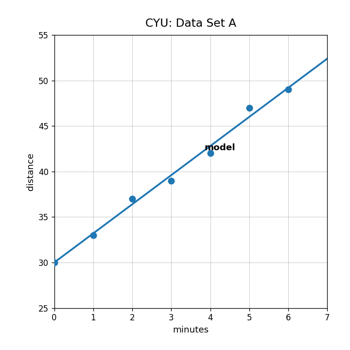
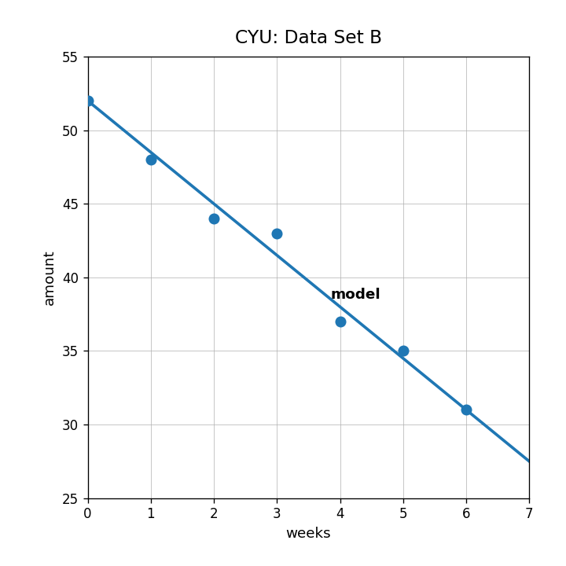

Describe the association in Data Set A.

Use the model in Data Set A to predict the output when the input is 5. Interpret your answer.
Describe the association in Data Set B and explain what the negative direction means.

A line of fit is $y=4x+18$. Predict $y$ when $x=7$ and state whether this is an exact value or a model prediction.
A model predicts 42, but the actual data value is 47. Is the residual positive or negative? Explain.
Why might a scatterplot with no clear association be a poor choice for a linear model?
In $S=2.5h+68$, what could the slope 2.5 mean in a study-hours and score context?
A data set only includes inputs from 0 to 6. A student uses the line of fit to predict the output at input 40. Critique the prediction.